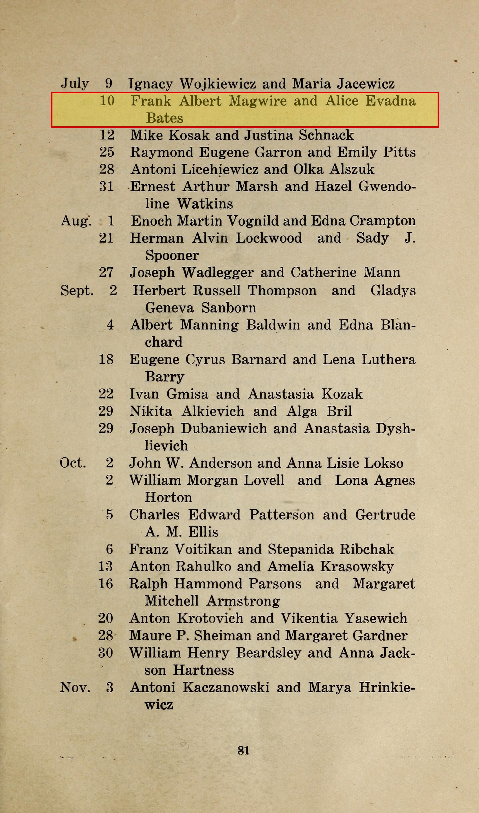
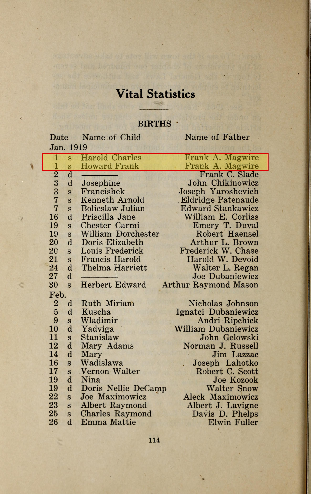

Magwire and Bates
The Magwires
Frank Albert Magwire ran Magwire's Pharmacy in Springfield, Vermont, for thirty seven years. His parents were Albert A. Magwire and Alice Jenny (Spaulding) Magwire. His son Howard is Tracy Crosby's father.
Albert and Alice Jenny
Albert A. Magwire was born in Brooklyn, New York, on October 10, 1845. He married Alice Jenny Spaulding at Cavendish, Vermont, on November 8, 1887, and died in Springfield on February 21, 1929. A Find a Grave note names his parents as George and Mary (Prentice) Magwire. That note has not been checked against a record, so George and Mary are not on the tree. The lead is on the research page.
Alice Jenny was born at Cavendish on August 17, 1866, the daughter of Charles Elliot Spaulding and Amantha (Putnam) Spaulding. Two family histories, the Spalding Memorial of 1872 and the Dickey Genealogy of 1898, give that birth. She died at West Lebanon, New Hampshire, on November 13, 1951, and was buried with Albert in Oakland Cemetery, Springfield.
Albert and Alice's children included Ethel, Frank Albert, Edna, Charles E. and Harrold. This site follows Frank's line. The spelling Magwire, and the form Maguire on some memorials, is the same family. See the conflicts.
Frank, the pharmacy, and a civil case
Frank Albert Magwire was born in Springfield on February 14, 1889. He married Alice Evadna Bates there on July 10, 1912. The town's printed register is the record. Alice was born in Williamstown, Massachusetts, on September 7, 1889. Her own parents have not been identified. She died in Springfield on March 29, 1972, and is buried with Frank in Oakland Cemetery.
Frank owned Magwire's Pharmacy in Springfield for thirty seven years and retired in 1954. That length of time comes from his obituary, so it is probable, not a line in a register we have copied here.
In 1940 he kept three pinball machines in the store. The machines already carried a state license. When the village demanded its own large license fee, he paid under protest and sued. In January 1941 the Vermont Supreme Court, in Magwire v. Village of Springfield, reversed the dismissal of his suit and sent the civil case back for trial. It was a dispute over a license fee, not a criminal charge.
He belonged to St. John's Lodge No. 41 and to an Odd Fellows lodge for more than fifty years, and he was a member of Mt. Sinai Shrine in Montpelier. Montpelier is not in the place table, so it is not on the map. Frank died at Springfield Hospital on October 8, 1967.
Frank and Alice's sons were Raymond Bates (born March 18, 1913, died in Rutland on April 26, 1997, buried at Hillside Cemetery in Castleton), and the twins Harold Charles and Howard Frank, born on January 1, 1919.


Howard, Harold and Raymond
Harold Charles Magwire, Howard's twin, served in the U.S. Navy and married Nellie Magwire. Her details are not published. He died in Ormond Beach, Florida, on October 16, 2002, and is buried at the Vermont Veterans Memorial Cemetery in Randolph Center.
Howard Frank Magwire married Gwendolyn Farr in Springfield on January 7, 1961. That date is probable: it comes from a memorial that cites a Vermont marriage record, and the record itself is not copied here. By 1967 Howard was living in West Springfield, Massachusetts. That stay is not a separate pin. Gwendolyn's family is on the Farr page. Their daughter is Tracy Jo Crosby. Howard died in 2014 and was buried in Oakland Cemetery, Springfield, beside his parents' lot. Gwendolyn had died on September 6, 2009, in Suffield, Connecticut.
Howard on the tree · Gwendolyn on the tree · Tracy on the tree